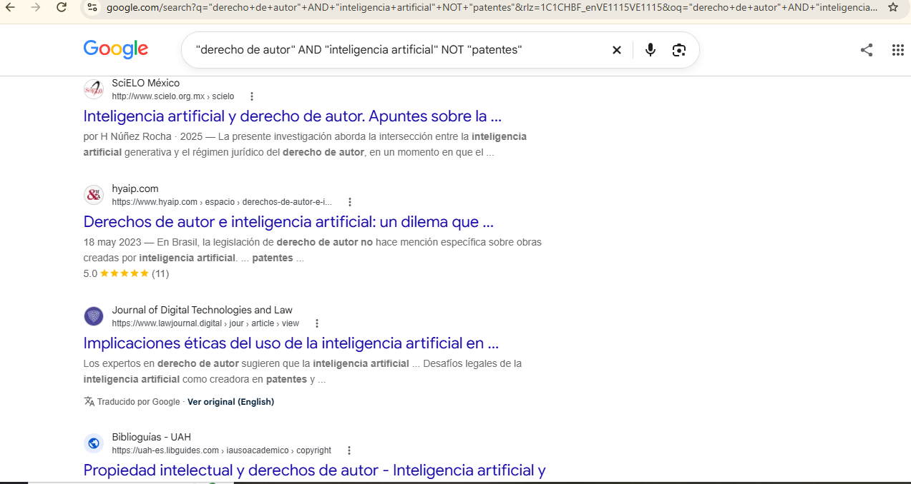
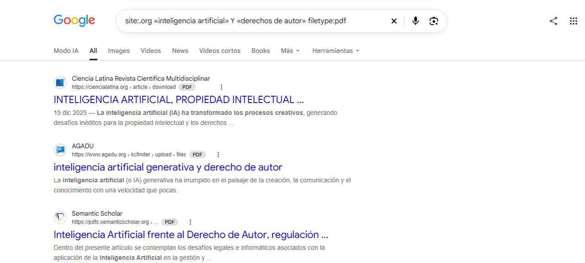
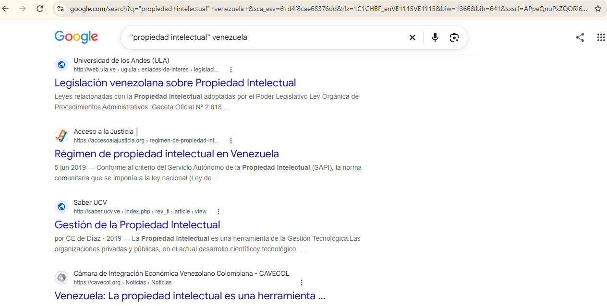

Localizar jurisprudencia, doctrina y normativa internacional vigente que determine si las obras creadas de forma autónoma por IA corporativa o algoritmos pueden ser sujetas a propiedad intelectual, o si pertenecen al dominio público, evaluando el impacto en la seguridad jurídica del entorno digital actual
Ámbito y Criterios
Tema: Propiedad Intelectual
Ámbito: Venezuela; fuentes jurídicas y referencias técnicas sobre internet
Criterios de evaluación: Autoría, pertinencia, vigencia y verificabilidad
2 - Estrategias de búsqueda
Tres estrategias documentadas con capturas de los resultados obtenidos.
Estrategia 1: Operadores Booleanos
"derecho de autor" AND "inteligencia artificial" NOT "patentes"
Los operadores booleanos (AND, OR, NOT) permiten combinar palabras clave para delimitar o expandir los resultados lógicos de una base de datos o motor de búsqueda.

Resultado esperado: Filtra el ruido digital eliminando debates sobre patentes de software, concentrándose exclusivamente en obras artísticas/literarias e IA.
Estrategia 2: Búsqueda Avanzada por Comandos (Filtro de Dominio/Tipo de Archivo)
site:.org artificial intelligence AND copyright filetype:pdf
Permite restringir la búsqueda a servidores institucionales o a formatos de documentos específicos indispensables para la investigación legal.

Resultado esperado: Encuentra directamente ensayos científicos y documentos de trabajo en PDF publicados por organizaciones internacionales (como la OMPI o la UNESCO).
Estrategia 3: Filtros de busqueda y región
"propiedad intelectual" venezuela
Las comillas delimitan una expresión exacta de busqueda

Resultado esperado: Excluye doctrinas obsoletas previas al auge masivo de plataformas como ChatGPT o Midjourney, capturando el estado del arte actual.
3 - ¿Qué fuentes utilizar? (Semáforo de Confiabilidad)
Clasificación según calidad documental, vigencia y utilidad.
🟢 Fuentes Confiables (Color Verde)
Fuente 1: Sitio web oficial de la Organización Mundial de la Propiedad Intelectual (OMPI).
Criterio de confiabilidad: Autoría institucional internacional, repositorio oficial de tratados multilaterales y neutralidad regulatoria.
🟢 Fuentes Confiables (Color Verde)
Fuente 2: Sentencia judicial de un tribunal supremo (ej. Oficina del Derecho de Autor de EE. UU. o Tribunal de Justicia de la UE).
Criterio de confiabilidad: Fuente oficial de derecho, fuerza vinculante y máxima verificabilidad legal.
🟡 Fuentes Dudosas (Color Amarillo)
Fuente 3: Artículo de opinión en un blog jurídico comercial o de una firma de abogados privada
Criterio de confiabilidad: Aunque tiene autoría de profesionales, carece de revisión por pares, su vigencia de norma puede estar sesgada a intereses comerciales y no constituye una fuente oficial de derecho.
🔴 Fuentes Descartadas (Color Rojo)
Fuente 4: Hilos de discusión en foros tecnológicos (Reddit, X) o artículos de blogs informativos editables sin firma de un jurista
Criterio de confiabilidad: Anonimato en la autoría, nula verificabilidad, alta probabilidad de contener interpretaciones erróneas de las leyes de propiedad intelectual y ausencia de rigor académico.
4 - Reflexión
1. ¿Por qué en internet no hay una organización centralizada?
Internet nació bajo una arquitectura descentralizada y de protocolos abiertos (TCP/IP) diseñada para la resiliencia y la libre circulación de información. Al no depender de un único nodo o gobierno, la red creció de forma orgánica y transfronteriza. Esta ausencia de un "gobierno central" informático responde al principio de neutralidad de la red, permitiendo que cualquier persona publique contenidos sin una validación o filtro previo de veracidad o legalidad.
2. Impacto en el trabajo del profesional del Derecho
Para el abogado, la descentralización de la información es una espada de doble filo. Por un lado, democratiza el acceso al derecho comparado; por el otro, genera una infoxicación (sobrecarga informativa). El abogado moderno ya no sufre por escasez de información, sino por la dificultad de filtrarla. Nos obliga a desarrollar competencias digitales críticas de curaduría de contenidos para no fundamentar estrategias legales en normativas derogadas, noticias falsas o interpretaciones jurídicas de jurisdicciones equivocadas.
3. Impacto en la Seguridad Jurídica
La falta de centralización y la volatilidad de los contenidos en internet atentan directamente contra la seguridad jurídica. En el ecosistema digital, los vacíos legales ("lagunas normativas") se amplifican. La propiedad intelectual se vuelve difusa cuando los servidores cambian de jurisdicción en segundos, o cuando las evidencias digitales de una infracción de derechos de autor pueden ser borradas o alteradas sin dejar rastro centralizado. La predictibilidad de las decisiones judiciales se debilita cuando las fuentes doctrinales en la red carecen de un control estricto de vigencia.